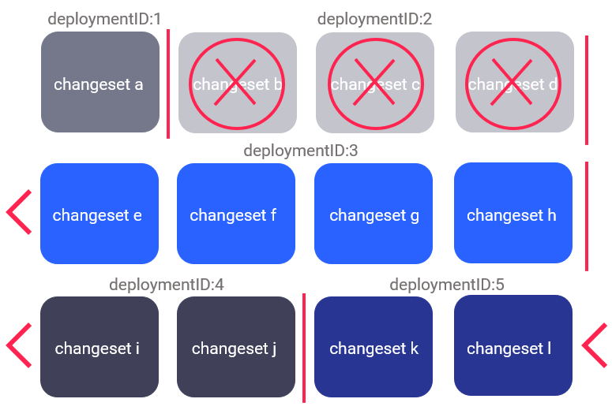

rollbackOneUpdaterollbackOneUpdate rolls back all deploymentId that was made during a specific change to your database. It is only available for
rollbackOneUpdate is typically used when you want to undo a series of changes made to your database during a specific deployment and revert those
The rollbackOneUpdate goal allows you to target a specific deploymentId without impacting other changes or deployments that came before or after it.

The image shows deploymentIds 1 through 5, with deploymentId 2 incorporating all the rollbackOneUpdate goal allows you to target deploymentId 2 and revert all deploymentId to its previous state without impacting the others.
rollbackOneUpdateUsing the rollbackOneUpdate goal comes with risks of unintended consequences. For this reason, it is a best practice to run the rollbackOneUpdateSQL goal because it allows you to inspect the rollback SQL and search for any potential mistakes before you execute rollbackOneUpdate.
Also, as the use of rollbackOneUpdate comes with risks of unintended consequences, the goal requires a liquibase.force
Running the rollbackOneUpdate goal will remove the deployment record from the rollbackOneUpdate goal has been run.
Depending on your desired outcome, consider doing one of the following:
pom.xml file. To configure your pom.xml file, refer to Configuring pom.xml does not reference a <ProLicenseKey>specify your to the pom.xml file.
rollbackOneUpdate Maven goalBefore running the rollbackOneUpdate goal, you can get the deploymentId of the deployment you want to revert by running the history goal:
mvn liquibase:historyIf you don’t specify the deploymentId, by default, deploymentId from the
Next, run the rollbackOneUpdate goal, with your information:
mvn liquibase:rollbackOneUpdate -Dliquibase.deploymentId=6477021518Enter the name of the deploymentId that you want to use in place of 6477021518. For more information, run mvn liquibase:help -Ddetail=true -Dgoal=rollbackOneUpdate.
When successful, the rollbackOneUpdate Maven goal produces the following output:
[INFO] Scanning for projects...
[INFO]
[INFO] -------------------< com.example:liquibase-project >--------------------
[INFO] Building liquibase-project 05XII19
[INFO] --------------------------------[ jar ]---------------------------------
[INFO] --- liquibase-maven-plugin:4.1.1:rollbackOneUpdate (default-cli) @ liquibase-project ---
[INFO] ------------------------------------------------------------------------
[INFO] Successfully installed license from Base64 string starting with 'ABwwGgQUvH' (property liquibaseProLicenseKey).
[INFO] Liquibase Pro 4.1.1 by Datical licensed to support until Wed Sep 22 23:59:59 CDT 2021
[INFO] Liquibase Pro 4.1.1 by Datical licensed to support until Wed Sep 22 23:59:59 CDT 2021
[INFO] ####################################################
## _ _ _ _ ##
## | | (_) (_) | ##
## | | _ __ _ _ _ _| |__ __ _ ___ ___ ##
## | | | |/ _` | | | | | '_ \ / _` / __|/ _ \ ##
## | |___| | (_| | |_| | | |_) | (_| \__ \ __/ ##
## \_____/_|\__, |\__,_|_|_.__/ \__,_|___/\___| ##
## | | ##
## |_| ##
## ##
## Get documentation at docs.liquibase.com ##
## Get certified courses at learn.liquibase.com ##
## Get advanced features and support at ##
## liquibase.com/support ##
## ##
####################################################
Starting Liquibase at 08:06:54 (version 4.1.1 #10 built at 2020-10-12 19:24+0000)
[INFO] Parsing Liquibase Properties File local.liquibase.properties for changeLog parameters
[INFO] Executing on Database: jdbc:oracle:thin:@localhost:1521/ORCL
[INFO] Successfully installed license from Base64 string starting with 'ABwwGgQUvH' (property liquibaseProLicenseKey).
[INFO] Liquibase Pro 4.1.1 by Datical licensed to support until Wed Sep 22 23:59:59 CDT 2021
[INFO] Liquibase Pro 4.1.1 by Datical licensed to support until Wed Sep 22 23:59:59 CDT 2021
[INFO] Reading from DATABASECHANGELOG
[INFO] Successfully acquired change log lock
Rolling Back Changeset:dbchangelog.xml::1606322157619-17::Nataliya (generated)
Rolling Back Changeset:dbchangelog.xml::1606322157619-16::Nataliya (generated)
[INFO] Successfully released change log lock
[INFO] ------------------------------------------------------------------------
[INFO]
[INFO] ------------------------------------------------------------------------
[INFO] BUILD SUCCESS
[INFO] ------------------------------------------------------------------------
[INFO] Total time: 5.202 s
[INFO] Finished at: 2020-11-27T08:06:56-06:00
[INFO] ------------------------------------------------------------------------rollbackOneUpdate required Maven configuration |
|
Definition |
|---|---|
| liquibase.deploymentId | Specifies the update your want to rollback. A list of updates with deploymentId can be found by using the history goal. |
| liquibase.force | Specifies a required flag, which indicates you intend to run rollbackOneUpdate. |
| liquibase.liquibaseProLicenseKey | Specifies your |
rollbackOneUpdate optional Maven configuration | Definition | |
|---|---|
| liquibase.changeLogDirectory | Specifies the directory where |
| liquibase.changeLogFile | Specifies the |
| liquibase.changelogCatalogName | Specifies the catalog
|
| liquibase.changelogSchemaName | Specifies the schema
|
| liquibase.clearCheckSums [boolean] | Forces checksums to be cleared from
the
|
| liquibase.contexts | Specifies which contexts |
| liquibase.databaseChangeLogLockTableName | Specifies the table name to use for the
|
| liquibase.databaseChangeLogTableName | Specifies the table name to use for the
|
| liquibase.databaseClass | Specifies the database object class. |
| liquibase.defaultCatalogName | Specifies the default catalog name to use for the database connection. |
| liquibase.defaultSchemaName | Specifies the default schema name to use for the database connection. |
| liquibase.driver | Specifies the driver class name to use for the database connection. |
| driverPropertiesFile | Specifies the location of a JDBC connection properties file which contains properties the driver will use. |
| liquibase.emptyPassword [boolean] | Deprecated. Use an empty or null value for the password instead. Default value is: false. |
| expressionVariables | Specifies a map-based collection of
|
| expressionVars | Specifies a property-based collection of
|
| liquibase.includeArtifact [boolean] | Includes a Maven project artifact in the class
loader which obtains the liquibase.properties file and
|
| liquibase.includeTestOutputDirectory [boolean] | Includes the Maven test output directory in the
class loader which obtains the liquibase.properties file and
|
| liquibase.labels | Specifies which labels |
| liquibase.outputDefaultCatalog [boolean] | Specifies whether to ignore the catalog or database name. Default value is: false. |
| liquibase.outputDefaultSchema [boolean] | Specifies whether to ignore the schema name. Default value is: false. |
| liquibase.outputFileEncoding | Indicates that you want to set the
character encoding of the output file during the updateSQL phase. |
| liquibase.password | Specifies the database password for the database connection. |
| liquibase.promptOnNonLocalDatabase [boolean] | Controls whether users are prompted before
executing
|
| liquibase.propertyFile | Specifies the |
| liquibase.propertyFileWillOverride [boolean] | Indicates that you want the
|
| liquibase.propertyProviderClass | Specifies the property provider which must be a
java.util.Properties implementation. |
| liquibase.rollbackScript | Specifies the path to a rollback script. |
| liquibase.server | Specifies the server ID in the Maven
settings.xml to use when authenticating. |
| liquibase.skip [boolean] | Specifies whether to skip running
|
| systemProperties | Specifies a list of system properties you want to pass to the database. |
| liquibase.url | Specifies the database URL you want to use to
execute
|
| liquibase.username | Specifies the database username for the database connection. |
| liquibase.verbose [boolean] | Controls the amount of output detail when you call the plugin. Default value is: false. |